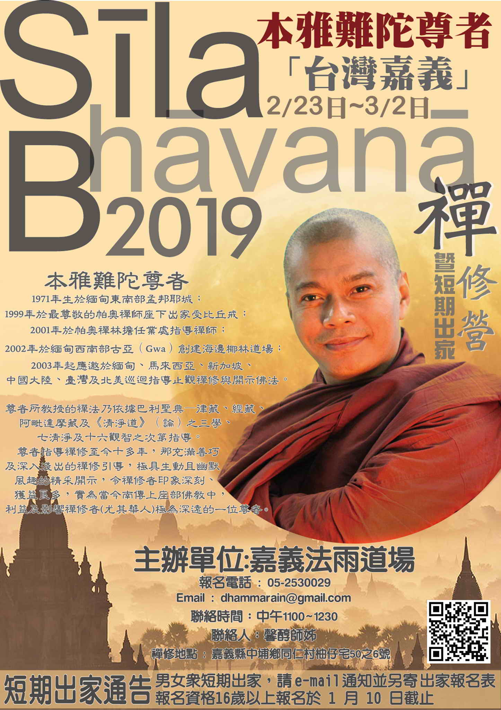

資訊更新日期: 12-19, 佛曆 (BE) 2562
(西元 2019 CE)
指導老師：宗戒尊尼（即【巴利語入門( 2013.11月修訂版 )】一書整理者：性恩尊尼；別名：法命尊尼）
簡介：
【巴利語入門】一書，著重於文法的基本概念，做為入門的學習與練習和簡明實用巴利文法的匯集，讓它在編排上與詞句表達上、組織上更有步驟與系統，讓人更容易理解與快速入門。
期望它能讓同好者在短短幾個月內打下巴利語文法基礎，同時能繼續閱讀第二集 《尼柯耶》選讀，學以致用地做漢巴對讀與分析、法義探討。
能愉悅地以巴利語打開自己的聽覺聆聽佛陀柔軟音聲，分享佛陀的法義，在事理二方面都能得利，邁向佛陀所鼓勵我們要當「法嗣」的目標。
同時它也是佛教國家的共通語言，巴利語的入門又是在幾個月內就可以被精通的，因此實在值得去學會。
原則上：每月 第一週 & 第三週 的週日。
時間:上午 09:00 ~ 11:00
12月第 4、5 週：12-21、12-29
11月第 2、4 週：11-10、11-24
10月第 1、4 週：10-06、10-27
9月第 1、4 週：09-01、09-22
7月第 1、3 週：07-07、07-21
6月第 1、3 週：06-02、06-16
5月第 3 週：05-19
2019-04-14, 04-28
09-16; 10-14 及 10-28; 12-23
7, 8月(暫停)
6月第2、4週：06/10; 24(週日)
5月第3、4週：05/20; 27(週日)
4月第4、5週：04/22; 29(週日)
3月第2、4週：03.11; 03.25(週日)
2018.02.04(第一週週日)、02.10(第二週週六)
01.07 & 01.21 2018
11月第1、4週：11/05日 (週日)，11/26日 (週日)(updated on 10.30)
10月第2、4週：10/08日 (週日)，10/22日 (週日)(updated on 10.10)
8月第2、4週：8/13日 (週日)，8/27日 (週日)(updated on 07.29)
7月第2、4週：7/9日(週日)，7/23日 (週日)(updated on 07.04)
6月第2、4週：6/11(週日)，6/25(週日)(updated on 06.05 )
6月第2、4週：6/11(週日)，6/25(週日)(updated on 06.05 )
5/7,5/21(週日)
2017, 二月上課日期：第三週2月19日 (週日)
2016, 三、四月份調為第二、四週日03.13; 03.27; 04.10; 04.24
2015, 8月上課調為： 08.16, 08.23（週日）(因8月第一週-- 08.09 颱風影響停課)。
2015, 06.07, 06.28; 07.12, 07.26（週日）(因6月第三週為端午節)。
2015, 05.03, 05.17（週日）
2014, 09.28, 10.05, 10.19（週日）（*** 09.21 因颱風停課，延後至 09.28 補課)。
Tel： (05)253-0029
E-mail：dhammarain@gmail.com
報名表 or PDF(與【攝阿毘達摩義論解讀課程】報名表相同)
原則上：每月 第一週 & 第三週 的週日。
參【巴利文教學】
時間:(下午) 14:00 ~ 17:00
歡迎對 "阿毘達摩" 有興趣的法友揪親戚五十、朋友八十，一起來學習。
請事先以 E-MAIL 或 電話 報名
Tel： (05)253-0029
E-mail：dhammarain@gmail.com
報名表 or PDF
03.17~03.18
每月一次的2日禪共修，因 2月舉辦禪修營停止一次。
2日禪共修--2018.01.27(Sat.)~ 01.28(Sun.)
禪修日期：2017.11.18(Sat.)~ 11.19(Sun.)
禪修時間：09:00 am.~ 05:00 pm.
報到時間：11月17日(五)下午4:00 ~ 6:00
二日禪共修作息表
禪修時間：09:00 am.~ 05:00 pm.
報到時間：10月13日(五)下午4:00 ~ 6:00
禪修時間：09:00 am.~ 05:00 pm.
報到時間：6月9日(五)下午4:00 ~ 6:00
二日禪共修作息表
08:50------報到
晚上不提供膳食，歡迎隨喜參加。
禪修及報名地點: 法雨道場(嘉義縣中埔鄉同仁村柚仔宅50-6號)
遠道者可掛單住宿
請事先以 E-MAIL 或 電話 報名
禪修時間：09:00 am.~ 05:00 pm.
報到時間：10月19日(五)下午4:00 ~ 6:00
二日禪共修作息表
08:50------報到
晚上不提供膳食，歡迎隨喜參加。
禪修及報名地點: 法雨道場(嘉義縣中埔鄉同仁村柚仔宅50-6號)
遠道者可掛單住宿
請事先以 E-MAIL 或 電話 報名
生命的必修課：面對老、病、死而無所懼畏。
（另一張海報 , PDF）
日期：本年(2019)，09-04 起，每周三； 緣起
詳參 羅老師所述：
羅馬柱的省思──念死法門（死隨念 maraṇānussati）(08-10 '19 更新) 為什麼要學習阿毗達摩(08-10 '19 更新) 羅慶龍 老師簡介 1953年生 台北縣雙溪鄉（今新北市雙溪區）人。 國立台灣師範大學化學系畢業，國立清華大學化學研究所碩士。 嘉義高中退休教師。 1998年 香光尼僧團「安慧學苑」佛學研讀班（初、中、高級）畢業， 2012年起 受教巴利佛法於 宗戒法師。 2015年起 參加 菩提長老每周一次的巴利學習課程班。 主辦：法雨道場 請事先以 E-MAIL 或 電話 報名 ◇◇◇ 邀請因緣俱足的朋友，參與此免費學習課程；依據巴利三藏，一起學習面對老、病、死！◇◇◇
日期：5月19日（五月，月圓日）
衛塞（Vesak）源於巴利語“衛塞迦”（Vesākha）的簡稱。南傳上座部傳統上以 Vesākha 當月（陽曆五月）月圓日，為佛陀——釋迦牟尼佛誕生、成道、涅槃的紀念日；象徵佛陀德智圓滿、福慧具足、證悟清淨、平等、光明的境界。
可參考：衛塞節（維基百科，自由的百科全書）；或 Vesak Festival in Sri Lanka（斯里蘭卡網站，英文）。
“ 燈 ”，
禪修日期：2019-12-01(日) ~ 12-16(一)
明德尊者華語翻譯
參加者自備：毯子(或睡袋)、盥洗用具等日用品。
晚上不提供膳食。
禪修及報名地點: 法雨道場(嘉義縣中埔鄉同仁村柚仔宅50-6號)
請事先盡量以 E-MAIL報名
*** 道場可代為聯繫配合的計程車業者接送，有需求者請提早來電詢問。***
☺☺☺ 歡迎法友隨喜參加 ☺☺☺
請參考法雨道場禪修營規約
教誡師長(ovāda-ācariya)及禪師(kammaṭṭhāna-ācariya) 大長老為帕奧禪林的資深禪師、第二(second)住持，曾代理禪林的住持。 長老深受僧信愛戴，和善可親，睿智安樂，善巧教授。 1947年在曼德勒出生，年11出家，1967年受比丘戒。 1963至緬甸的最重要教理道場之一(Mahagandharama, Mahagandhayon Buddhist School)求學，旋於1967-1971任教於此。 1977年獲得說法阿闍黎(Dhamma-Ācariya)之榮譽。 1978-1995任 Shwegu 道場的第二住持。 1998-迄今 任帕奧禪林的禪師 1999-迄今 創立 Kume 森林道場(面積約100餘畝)，任為住持。 2000-迄今 擔任帕奧禪林之第二住持。並曾暫代住持。 2003年 在越南教禪 2017年第50個戒臘(vassa)。 2008-2010年 在台灣教禪2年。 2010年 在馬來西亞教禪一年。 2010年～ 迄今每年被邀請到越南、馬來西亞、印尼、尼泊爾等不同地方教禪。 2018年 在台灣教禪。
禪修日期：2018-11-29(四) ~ 12-21(五)
明德尊者華語翻譯
報到時間：2018年11月29日下午2:00至4:00
12/21(五)中午12:00 圓滿
短期出家通告：
P.S.能夠全程參與者優先錄取，您若不能全程參與，可以隨喜參加。
參加者自備：毯子(或睡袋)、盥洗用具等日用品。
晚上不提供膳食。
禪修及報名地點: 法雨道場(嘉義縣中埔鄉同仁村柚仔宅50-6號)
請事先以 E-MAIL 或 電話 報名
*** 道場可代為聯繫配合的計程車業者接送，有需求者請提早來電詢問。***
報名表：m$ .doc or PDF
（或 https://mega.nz/#F!xBIWECJR!51ajycQU6qx-pyDKNOY1fA，m$ .doc）
☺☺☺ 歡迎法友隨喜參加 ☺☺☺
大長老為帕奧禪林的資深禪師、第二(second)住持，曾代理禪林的住持。 長老深受僧信愛戴，和善可親，睿智安樂，善巧教授。 1947年在曼德勒出生，年11出家，1967年受比丘戒。 1963至緬甸的最重要教理道場之一(Mahagandharama)求學，旋於967-1971任教於此。 1977年獲得說法阿闍黎(Dhamma-Acariya)之榮譽。 1978-1995任Shwegu道場的第二住持。 1998-迄今 任帕奧禪林的禪師 1999-迄今 創立Kume森林道場(面積約100餘畝)，任為住持。 2000-迄今 擔任帕奧禪林之第二住持。並曾暫代住持。 2003年 在越南教禪 2017年第50個戒臘(vassa)。 2008-2010年 在台灣教禪2年。
報名資格：國小五年級以上少年，四十歲以下青年為主。
幼童沙彌（十歲以下）需有基本生活自理能力，
男女眾共30位；居士家長法工10位。
報名截止：2018年12月31日（或額滿為止）
錄取通知：2019年01月10日 以 e-mail 通知
報到時間：2019年01月23日下午2:00至4:00 報到分組
禪修及報名地點: 法雨道場(嘉義縣中埔鄉同仁村柚仔宅50-6號)
請事先以 E-MAIL 或 電話 報名
禪修日期：2020-02-21(Fri.)~ 02-28(Fri.)
因本雅難陀尊者取消台灣行程，故活動停止 (2019-12-04)
禪修日期：2020-02-21(Fri.)~ 02-28(Fri.)(PS:活動恢復)(2019-12-19)
招收名額：男眾 25 人；女眾 35 人
報名截止：2020年1月20日
報到時間：2019年02月21日下午2:00至4:00
結束離營：2019年02月28日中午午餐後
參加者自備：毯子(或睡袋)、盥洗用具等日用品。
晚上不提供膳食。
禪修及報名地點: 法雨道場(嘉義縣中埔鄉同仁村柚仔宅50-6號)
請事先以 E-MAIL 報名
禪修日期：2019-02-23(Sat.)~ 03-02(Sat.)
短期出家通告：
參加者自備：毯子(或睡袋)、盥洗用具等日用品。
晚上不提供膳食。
禪修及報名地點: 法雨道場(嘉義縣中埔鄉同仁村柚仔宅50-6號)
請事先以 E-MAIL 或 電話 報名
禪修日期：2018.02.24(Sat.)~ 03.02(Fri.)
報名截止：額滿為止（禪修人數: 60人；男眾20人，女眾40人）。※※※ 已額滿，請暫勿報名。 ※※※ (2018.02.02 更新)
報到時間：2018年02月23日下午2:00至4:00。
參加者自備：毯子(或睡袋)、盥洗用具等日用品。
晚上不提供膳食。
禪修及報名地點: 法雨道場(嘉義縣中埔鄉同仁村柚仔宅50-6號)
請事先以 E-MAIL 或 電話 報名
日期：5月10日（五月，月圓日）
衛塞節是紀念佛陀——釋迦牟尼佛誕生、成道、涅槃的紀念日。衛塞（Vesak）是月圓的意思，是“衛塞迦”（Vaisakha）的簡稱，象徵佛陀德智圓滿、福慧具足、證悟清淨、平等、光明的境界。
“ 燈 ”，
禪修時間：09:00 am.~ 05:00 pm.
報到時間：5月12日(五)下午4:00 ~ 6:00
二日禪共修作息表
08:50------報到
晚上不提供膳食，歡迎隨喜參加。
禪修及報名地點: 法雨道場(嘉義縣中埔鄉同仁村柚仔宅50-6號)
遠道者可掛單住宿
請事先以 E-MAIL 或 電話 報名
時間：04:00pm.~ 05:00pm
主講：明德尊者
主題：因果、業報法則
地點：法雨道場
☺☺☺ 歡迎法友隨喜參加 ☺☺☺
禪修日期：2017.03.04(Sat.)~ 03.06(Mon.)
開示時間：3/4 (六) p.m.7:30-8:30
報到時間：2017年3月4日下午2:00至4:00
參加者自備：毯子(或睡袋)、盥洗用具等日用品。
晚上不提供膳食。
禪修及報名地點: 法雨道場(嘉義縣中埔鄉同仁村柚仔宅50-6號)
請事先以 E-MAIL 或 電話 報名
☺☺☺ 歡迎法友隨喜參加 ☺☺☺
大長老為帕奧禪林的資深禪師、第二(second)住持，曾代理禪林的住持。 長老深受僧信愛戴，和善可親，睿智安樂，善巧教授。 1947年在曼德勒出生，年11出家，1967年受比丘戒。 1963至緬甸的最重要教理道場之一(Mahagandharama)求學，旋於967-1971任教於此。 1977年獲得說法阿闍黎(Dhamma-Acariya)之榮譽。 1978-1995任Shwegu道場的第二住持。 1998-迄今 任帕奧禪林的禪師 1999-迄今 創立Kume森林道場(面積約100餘畝)，任為住持。 2000-迄今 擔任帕奧禪林之第二住持。並曾暫代住持。 2003年 在越南教禪 2017年第50個戒臘(vassa)。
2017年的1月、2月各上課一次，即：
時間：09:00 am.~ 05:00 pm.
報到時間：2月17日(五)下午4:00~6:00
二日禪共修作息表
08:50------報到
晚上不提供膳食，歡迎隨喜參加。
禪修及報名地點: 法雨道場(嘉義縣中埔鄉同仁村柚仔宅50-6號)
遠道者可掛單住宿
請事先以 E-MAIL 或 電話 報名
禪修日期：2017.02.24(Fri.)~ 03.04(Thur.)
報名截止：2017年1月23日
報到時間：2017年02月23日下午2:00至4:00
參加者自備：毯子(或睡袋)、盥洗用具等日用品。
晚上不提供膳食。
禪修及報名地點: 法雨道場(嘉義縣中埔鄉同仁村柚仔宅50-6號)
請事先以 E-MAIL 或 電話 報名
時間：09:00 am.~ 05:00 pm.
五日禪共修作息表
08:50------報到
晚上不提供膳食。
禪修及報名地點: 法雨道場(嘉義縣中埔鄉同仁村柚仔宅50-6號)
遠道者可掛單住宿
請事先以 E-MAIL 或 電話 報名
時間：09:00am.~05:00pm.
一日禪共修作息表
08:50------報到
禪修日期：2016.11.30(Wed.)~ 12.07(Wed.) (日期更動, 06.22 更新)
報名截止：額滿為止
名額：60人(男20，女40)
報到時間：2016年11月29日下午2:00至4:00 (日期更動, 06.22 更新)
參加者自備：毯子(或睡袋)、盥洗用具等日用品。
晚上不提供膳食。
禪修及報名地點: 法雨道場(嘉義縣中埔鄉同仁村柚仔宅50-6號)
請事先以 E-MAIL 或 電話 報名
報名表：m$ .doc or PDF ;
燃燈禪師（Sayalay Dīpaṅkara）在1964 年 5 月 9 日的衛塞節出生於緬甸。很年輕時候，每次只要有僧眾從她附近經過，就會對他們充滿著虔敬之心。 25 歲時，毅然放棄了大學學位，尋求更高的佛法智慧，而在帕奧禪師（Pa Auk Sayadaw）座下出家。
身為緬甸上座部的尼師，至今仍然持守著十戒。透過教導禪修來分享佛法成為她的使命。1995年始，她離開緬甸陸續到新加坡、 馬來西亞、 印尼、 泰國、 斯里蘭卡、 澳洲、 德國、 英國、 美國、 加拿大、 臺灣、 香港、 日本與 韓國等地教學，並在她的祖國，緬甸舉辦長期的禪修營。展開了她「修補破鍋」──覺醒有情之旅。
禪師走遍不同文化的國家，堅持著為那些極度真誠想修行的人傳播教法。由於她對居士的慈心和悲憫，學生與日俱增。現在，許多世界各地的學生都邀請她到他們的家園和國家指導禪修。
在其構思、 設計和監督之下，興建了位於緬甸眉謬（Maymyo）的梵住禪院，並慷慨地提供此良好的環境給其他的修行者。禪修者受益於她深切的意欲，無形中如實地學習清淨道論和三藏。
她奉獻著精力於世界各地分享佛法，藉由供養金使學生們能續住在梵住禪院從事較長時間的禪修。一整年裡禪師遍遊到有人想要學習的地方，僅留給自己不多自修和休息的時間。
禪師除了指導修習止、觀的四十種業處之外，也教示身為一名佛教徒所必須涵養和體現的人格品質……。(取材自： http://www.brahmavihari.org/#!bio/cmhg)
禪修日期：2016.02.08~14(農歷初一至初七)
報名截止：2016年1月31日
名額：50人(男15，女35)
參加者自備：毯子(或睡袋)、盥洗用具等日用品。
晚上不提供膳食。
禪修及報名地點: 法雨道場(嘉義縣中埔鄉同仁村柚仔宅50-6號)
請事先以 E-MAIL 或 電話 報名
1968年出生於馬來西亞歷史最悠久的古城麻六甲（Melaka），中學時期已經認真思考人生的方向，並開始學禪，大學畢業後決心把生命投入修行。
1996年12月9日於緬甸帕奧禪林出家受具足戒，並依止帕奧禪師為戒師。出家後即在帕奧禪師的嚴格監督和指導下修習止觀業處。
2006年在帕奧禪師的指示下開始教授止觀禪法。
2010 年領眾到喜馬拉雅山雪域修行，行腳，因緣具足也會辦起臺灣和雪地道場，以便讓弟子們能更有效率的修行與提升。
2011年在台灣台東縣東河鄉泰源成立兜率天修行林台灣分院籌備處。
2013年辦起馬六甲道場。
2014年已宣布暫停教學，留在某個地方，繼續潛修，以完成未完成的任務。
目前的著作有《自然的代價》、《吉祥語》、《吉祥禪風集》(取材自：Tusita Hermitage 兜率天修行林-- 關於 -- 吉祥尊者簡介)
報名截止：2015年11月6日
報到時間：2015年11月15日下午2:00至4:00
參加者自備：毯子(或睡袋)、盥洗用具等日用品。
晚上不提供膳食。
禪修及報名地點: 法雨道場(嘉義縣中埔鄉同仁村柚仔宅50-6號)
請事先以 E-MAIL 或 電話 報名
備註：能全程參與者優先錄取，若 您不能全程參與，可以隨喜參加。
禪修日期: 05月30日(週六)
有意參加者，請先參閱「
安般入門」章節（《正念之道》─ 帕奧禪師開示與問答）
禪修日期: 04月04~06日(週六~週一)
報到時間：2015年4月4日（週六）下午 2 ~ 4點
(禪修期間另有「清明點燈佛隨念」活動)
有意參加者，請先參閱「
安般入門」章節（《正念之道》─ 帕奧禪師開示與問答）
備註：
一. 巴利文教學 / 宗戒尊尼主講
2.) 2014年 1、2 月份的「 巴利文教學」暫停，3 月份恢復正常上課( 每個月第一、三週週日 14:30 ~ 17:00 )。
指導老師-- 羅慶龍老師；請預先閱讀下列書籍：
另請參考： 羅老師主講之投影片（置於 YouTube 網站）：
備註：請事先以 E-MAIL 或 電話報名 (馨醇居士)；
緣起：錫蘭聖法大長老今年十一月供養法雨道場的菩提樹，現在已經做成禮敬的平台，敬邀有緣的法友一起來共襄盛舉！ 時間：本周日(二十九日) 下午三點 地點：法雨道場 備註： 1 菩提樹等同於佛塔，佛友們可準備香、花、燭來供養！ 2 禮敬菩提樹後，接著有禪修開示--安般念的修習！ 2014.01.04 ~ 2014.01.17 本雅難陀禪師 指導的禪修營期間 除週日外，每天晚上 8:00有禪修開示 禪師談話生動活潑 歡迎法友到場聞法 TEL:05 2530029
上午 8:30 報到
每週佛法開示及一日禪活動 指導老師:明德尊者
del:
----------------------------------------------------------
禪法：依＜清淨道論＞所示導的止禪(四禪八定)與觀禪(毘婆舍那)。
※ 07.13 -14 活動暫停(時間更新, 06.27)。
※ 07.13; 14 活動暫停(時間更新, 06.27)。
時間：2012.03.25 ~ 31
備註：請事先以 E-MAIL 或 電話報名 (馨醇居士)；
馬來西亞兜率天禪院(Tusita Hermitage),
吉祥尊者(Bhante U Mangala) 開示 mp3 下載:
備註：當日有華語即席翻譯。
聖法大長老簡介：
Ven. Ariyadhamma Mahathera（聖法大長老），斯里蘭卡籍，生於1937年4月24日。出家於1956年（17歲），1959年7月15日受比丘戒。他的戒師是 Ven. Kedevadduwa Jinawamsa（聖種大長老）為 Shri Kalyani Yogashrama Sajstha（斯里．卡里阿尼森林派）創立者（1951.6.17），屬於藍曼匿派（Ramabba Nikaya，斯里蘭卡三大派系之一）。他跟隨 Ven. Matara Wri Banarama 及本派其他長老學習三藏。聖法大長老威儀具足，德高望重，心性慈祥，博學強記，精通三藏、禪法。 1997 年曾受帕奧禪師指導禪修。長老現任斯里．卡里阿尼森林派總秘書，駐錫：Na Uyana Aranya Senasanaya（龍樹林僧院）, Pansiyagama 60554, Sri Lanka（斯里蘭卡）。
（按：斯里．卡里阿尼森林派有一百多所道場，絕大部分在鄉下、森林，本派約有五百位比丘，持戒精嚴，不持金錢，素食。該派有九處禪修中心，過去以教導馬哈希禪法為主，目前有些道場教導帕奧禪法。）
如今來自斯里蘭卡的龍樹林僧院（Na Uyana Aranya Senasanaya ）的聖法大長老（Most Venerable Na-Uyane Ariyadhamma Mahathera）慈悲接受法寂禪林的至誠邀請，百忙中撥冗於11月15日（星期二）蒞台弘法。聖法大長老也帶領四位僧眾一起到來，其中包括龍樹林僧院的現任主持與禪修業處指導老師—聖喜長老（Ven. Ariyananda Thero）。因首次到訪台灣，屆時，希望台灣各界廣大的有緣人，有機會與大長老及僧團結緣植福。因此法寂禪林將會安排有供僧法會、佛法開示、禪修營、短期出家等活動，歡迎樂法者踊躍參與此非常難得及殊勝的盛會。
擁有五十七個戒臘的聖法大長老是南傳佛教界的一代宗長。早期曾經跟隨不少資深的大長老座下嚴謹地修習巴利語、三藏聖典與禪修法門。於1996年，雖然已經身為三藏法師和眾多弟子依止的老師，但求法心切的大長老依然能夠臨時放下老師的身份，率領弟子僧眾一起到緬甸帕奧禪林向上首大業處阿闍梨——帕奧禪師修習止觀禪法。由於具有雄厚的波羅蜜，大長老在一年後就成功完成了帕奧禪師所傳授的修學課程，並獲得帕奧禪師授權教導依據《清淨道論》的止觀法門。2006年3月13日大長老榮獲緬甸政府頒授大業處阿闍梨（Mahakammatthanacariya）殊榮。
大長老近代不僅在斯里蘭卡盛名如雷貫耳，他的威德與攝受力也聞名海外各界。目前，在大長老座下出家修行的弟子眾大約有四千多位，在斯里蘭卡大約有150個大大小小的叢林道場，最大的叢林道場則約有兩千至四千畝不等。大長老的叢林道場與修行系統獲得斯里蘭卡政府的承認與大力支持，因此而營造了非常良好的條件，讓許許多多有意體證佛陀正法的海外佛弟子們都有個殊勝的修學環境去長期參學與潛修。
大長老的德行與智慧是眾所周知的，許多人被大長老親切溫和的素質、良好的舉止、博學的知識和深廣的智慧所攝受，曾經在大長老身邊服務過的淨人們也無不對大長老所散播的慈悲與親和力信服。
近年，大長老曾受到斯里蘭卡總統的邀請到總統府為總統開示，他的開示也通過媒體、電台和電視傳播到斯里蘭卡各處，許多佛法開示也被印成書冊免費分贈。此外，盡管大長老的僧務繁重，再加上年屆七十有四的古稀之齡，大長老仍慈悲接受大馬、印尼、新加坡、泰國等等佛教團體的摯誠邀請，戒饒益、法饒益。這種廣為眾生福利忘軀的精神著實讓我們肅然起敬。
如今長老應邀來台，希望諸法友藉此殊勝的法緣親近與供養以大長老為首的大僧團，為自己長遠的未來廣植廣大福業；即使今生因緣不具足於修行、但若能提升和淨化生命，根植於清淨的法緣直到最終得到究竟安穩與永恆的快樂！
因此再呼籲所有真心尋求淨化、解脫的朋友們莫錯失與大長老結法緣的稀有機緣。希望每個人都能為自己未來長遠的幸福與安樂耕耘，在無上的福田播下殊勝的種子。
晚上不提供膳食。
Tel：(05)253-0029 Fax：(05)203-0813
E-mail：dhamma.rain@msa.hinet.net
1953 出生，緬甸人。畢業於仰光大學
明德尊者於1970年出生於台北縣板橋市，大學畢，1997年3月於泰國受南傳比丘戒，在泰國、緬甸參學多年。
現由新任住持 明德尊者帶領大眾。
備 註：
晚上不提供膳食。
Tel：(05)253-0029 Fax：(05)203-0813
E-mail：dhamma.rain(AT)msa.hinet.net
歡迎參加全程。
晚上不提供膳食。
Tel：(05)253-0029 Fax：(05)203-0813
E-mail：newrain@ms22.hinet.net
曾參加其他禪修營者，免添報名表.直接告訴我們參加時間即可.
08-18 ~ 08-19
07-14 ~ 07-15
06.16~05.17
05.12~05.13
禪修日期：2017.08.19(Sat.)~ 08.20(Sun.)
禪修日期：2017.07.15(Sat.)~ 07.16(Sun.)
禪修日期：2017.06.10(Sat.)~ 06.11(Sun.)
09:00------受慈心九戒、初學者禪修指導
09:00~11:00----打坐、經行
11:00~1:00-----午餐、休息
1:00~4:00------打坐、經行
4:00~5:00-----佛法開示與討論
5:00-----賦歸
Tel： (05)253-0029/ 來電時間 pm12:00 ~ 17:00
E-mail：dhammarain@gmail.com
報名表：m$ .doc or PDF
禪修日期：10-20 ~ 10-21
09:00------受慈心九戒、初學者禪修指導
09:00~11:00----打坐、經行
11:00~1:00-----午餐、休息
1:00~4:00------打坐、經行
4:00~5:00-----佛法開示與討論
5:00-----賦歸
Tel： (05)253-0029/ 來電時間 pm12:00 ~ 17:00
E-mail：dhammarain@gmail.com
報名表：m$ .doc or PDF
時間：晚間7-9點；
地點：嘉義市西區玉康路160號——再耕園202教室（玉山郵局旁，可從友忠路進出）。(Google 地圖)
免費學習課程，由 羅老師義務主講。
因老、病、死是世俗所排斥，佛陀的法僅為少數人所能接受。但認識、改善、提升並超越生命是每個生命的必修課！
第二、三期進階級佛學研讀班結業。
Tel： (05)253-0029，執事：黃師姐
或，林師兄：0934-002-339
E-mail：dhammarain@gmail.com
報名表 or PDF
供佛 點燈 祈福
(點右圖可另開分頁瀏覽)
時間：晚上6:30
是一種熱能，以光明來傳遞我們的願心，在佛教中則象徵著智慧，
為自己和家人點燈供佛，讓家人、自己預約光明與希望，
讓佛法可以照亮您的路途，讓您平安順遂，
並藉由供燈祝願家人、自己都能長壽、平安、健康、光明吉祥。
指導老師：悉達拉大長老(Sayadaw U Cittara)
P.S.能夠全程參與者優先錄取，您若不能全程參與，可以隨喜參加。
(50戒臘，緬甸籍，帕奧禪林資深禪師，曾於2008、2009在臺灣南傳上座部學院指導禪修兩年)
Tel： (05)253-0029/ 來電時間 07:00 ~ 08:00; 11:30 ~ 13:00
E-mail：dhammarain@gmail.com
悉達拉大長老簡介

指導老師：悉達拉大長老(Sayadaw U Cittara)
(50戒臘，緬甸籍，帕奧禪林資深禪師，曾於2008、2009在臺灣南傳上座部學院指導禪修兩年)
男、女眾短期出家，請 e-mail 通知
預計招收人數：男25 / 女35
並另寄"出家報名表"。
報名於10月15日截止
悉達拉大長老授戒。
Tel： (05)253-0029/ 來電時間 pm12:00 ~ 17:00
E-mail：dhammarain@gmail.com
悉達拉大長老簡介

活動日期：2019-01-23(Wed.)~ 01-27(Sun.)午餐後結營。
且家長全程陪同參與。
Tel： (05)253-0029/ 來電時間 11:00 ~ 12:30/ 馨醇 師姐
E-mail：dhammarain@gmail.com
指導老師：本雅難陀尊者(Bhante U Punnananda)
指導老師：本雅難陀尊者(Bhante U Punnananda)

聯絡電話： (05)253-0029/ 聯絡時間 11:00 ~ 12:30/ 聯絡人：馨醇 師姐
E-mail：dhammarain@gmail.com
指導老師：本雅難陀尊者(Bhante U Punnananda)
男、女眾短期出家，請 e-mail 通知；並另寄"出家報名表"。
報名資格：16歲以上；報名於1月10日截止
Tel： (05)253-0029/ 來電時間 11:00 ~ 12:30/ 馨醇 師姐
E-mail：dhammarain@gmail.com
指導老師：本雅難陀尊者(Bhante U Punnananda)
Tel： (05)253-0029/ 來電時間 pm12:00 ~ 17:00
E-mail：dhammarain@gmail.com
◎本道場舉辦的禪修營不收費用，若要隨喜贊助，贊助的項目有：
道場 (包括打齋、建設、用品、醫藥等)、助印書籍、供僧(供養比丘必需品，可由淨人代收)。
供佛 點燈 祈福
(點右圖可另開分頁瀏覽)
時間：: 晚上7:00
是一種熱能，以光明來傳遞我們的願心，在佛教中則象徵著智慧，
為自己和家人點燈供佛，讓家人、自己預約光明與希望，
讓佛法可以照亮您的路途，讓您平安順遂，
並藉由供燈祝願家人、自己都能長壽、平安、健康、光明吉祥。
禪修日期：2017.05.13(Sat.)~ 05.14(Sun.)(母親節)
09:00------受慈心九戒、初學者禪修指導
09:00~11:00----打坐、經行
11:00~1:00-----午餐、休息
1:00~4:00------打坐、經行
4:00~5:00-----佛法開示與討論
5:00-----賦歸
Tel： (05)253-0029/ 來電時間 pm12:00 ~ 17:00
E-mail：dhammarain@gmail.com
報名表：m$ .doc or PDF

日期：2017.03.20(一)~25(六)
Tel： (05)253-0029
E-mail：dhammarain@gmail.com

指導老師：悉達拉大長老(Sayadaw U Cittara)
(50戒臘，緬甸籍，帕奧禪林資深禪師，曾於2008、2009在臺灣南傳上座部學院指導禪修兩年)
3/5 (日) p.m.4:00-5:00
3/6 (一) a.m.8:00-9:00
(緬語；華語翻譯)
Tel： (05)253-0029/ 來電時間 pm12:00 ~ 17:00
E-mail：dhammarain@gmail.com
悉達拉大長老簡介
2017.2月第3週週日-- 2/19。
備註: 2016年12月更動巴利語、阿毗達摩課的上課時間為第2、4週，即：
12/11、12/25；
1月第4週週日-- 1/22，
2月第3週週日-- 2/19。
禪修日期：2017.02.18(Sat.) ~ 02.19(Sun.)
09:00------受慈心九戒、初學者禪修指導
09:00~11:00----打坐、經行
11:00~1:00-----午餐、休息
1:00~4:00------打坐、經行
4:00~5:00-----佛法開示(明德尊者)
5:00-----賦歸
Tel： (05)253-0029/ 來電時間 pm12:00 ~ 17:00
E-mail：dhammarain@gmail.com
報名表：m$ .doc or PDF
指導老師：本雅難陀尊者(Bhante U Punnananda)

Tel： (05)253-0029/ 來電時間 pm12:00 ~ 17:00
E-mail：dhammarain@gmail.com
◎本道場舉辦的禪修營不收費用，若要隨喜贊助，贊助的項目有：
道場 (包括打齋、建設、用品、醫藥等)、助印書籍、供僧。
禪修日期：2017.01.28(Sat.) ~ 02.01(Wed.)
09:00------受慈心九戒、初學者禪修指導
09:00~11:00----打坐、經行
11:00~1:00-----午餐、休息
1:00~4:00------打坐、經行
4:00~5:00-----佛法開示(明德尊者)
5:00-----賦歸
Tel： (05)253-0029/ 來電時間 pm12:00 ~ 17:00
E-mail：dhammarain@gmail.com
報名表：m$ .doc or PDF
禪修日期：2016.12.18(Sun.)
09:00------受慈心九戒，基礎禪修介紹。
09:30~11:00----打坐、經行
11:00~1:00-----午餐、休息
1:00~4:00------打坐、經行
4:00~5:00-----與尊者(Bhante)佛法討論
5:00-----賦歸

指導老師：燃燈尼禪師(Sayalay Dīpaṅkara)
Tel： (05)253-0029/ 來電時間 pm12:00 ~ 17:00
E-mail：dhammarain@gmail.com
Application-form(bilingual-- English-Chinese): m$ .doc or PDF
◎本道場舉辦的禪修營不收費用，若要隨喜贊助，贊助的項目有：
道場 (包括打齋、建設、用品、醫藥等)、助印書籍、供僧。
燃燈禪師簡介


指導禪師：吉祥尊者(Bhante Maṅgala)
Tel： (05)253-0029/ 來電時間 pm12:00 ~ 17:00
E-mail：dhammarain@gmail.com
◎本道場舉辦的禪修營不收費用，若要隨喜贊助，贊助的項目有：
道場 (包括打齋、建設、用品、醫藥等)、助印書籍、供僧。
吉祥尊者（Ven.U Maṅgala）簡介
 ——帕奧禪林的業處指導老師之一
——帕奧禪林的業處指導老師之一
2008年開始在馬來西亞法學會(原名古晉菩提法苑) 的護持下
在菩提禪林及兜率天修行林教禪，主持短期出家。
 尊者通曉中英雙語，目前為古晉兜率天修行林（Tusita Hermitage ）〖位於砂撈越—古晉—石角—柔佛巴魯肚。只限男性出家眾、65歲以上的老尼師與男性禪修者〗以及菩提法苑（Bodhivana Buddhist Hermitage）〖位於砂撈越—古晉—11裡。只限65歲以下的女性出家眾與禪修者〗的精神導師，有近百位僧、尼、俗四眾弟子在尊者教導下習禪。
尊者通曉中英雙語，目前為古晉兜率天修行林（Tusita Hermitage ）〖位於砂撈越—古晉—石角—柔佛巴魯肚。只限男性出家眾、65歲以上的老尼師與男性禪修者〗以及菩提法苑（Bodhivana Buddhist Hermitage）〖位於砂撈越—古晉—11裡。只限65歲以下的女性出家眾與禪修者〗的精神導師，有近百位僧、尼、俗四眾弟子在尊者教導下習禪。
 2009 年籌辦兜率天修行林新翼，以提升修行林為叢林道場
2009 年籌辦兜率天修行林新翼，以提升修行林為叢林道場
以便讓男女僧信眾皆能安心修行

指導老師：本雅難陀 禪師 禪修日期：11月16日(週一)~22(日)
Tel： (05)253-0029/ 來電時間 pm12:00 ~ 17:00
報名表下載
E-mail：dhammarain@gmail.com
◎本道場舉辦的禪修營不收費用，若要隨喜贊助，贊助的項目有：
道場 (包括打齋、建設、用品、醫藥等)、助印書籍、供僧。
烏本雅難陀禪師11月另外兩個活動：
指導老師：悅音尊者(Bhante U Subhasita)
並請事先以 E-MAIL 或 電話 報名
Tel： (05)253-0029
報名表 or PDF
E-mail：dhammarain@gmail.com
◎本道場舉辦的禪修營不收費用，若要隨喜贊助，贊助的項目有：
道場(包括打齋、建設、用品、醫藥等)、助印書籍、供僧。
(供養比丘必需品，可由淨人代收)。

指導老師：悅音尊者(Bhante U Subhasita)
2014
離營時間：2015年4月6日（週一）下午5點 (遠道者可以留下過夜)
並請事先以 E-MAIL 或 電話 報名
Tel： (05)253-0029
報名表 or PDF
E-mail：dhammarain@gmail.com
◎本道場舉辦的禪修營不收費用，若要隨喜贊助，贊助的項目有：
道場(包括打齋、建設、用品、醫藥等)、助印書籍、供僧。
(供養比丘必需品，可由淨人代收)。
說明:
三月份起，每月第一、三週的週日，宗戒尊尼將教導 "巴利文"。
歡迎對 "巴利文" 有興趣的法友揪親戚五十、朋友八十，一起來學習。
時間:下午2:30~5:00
地點:法雨道場(05-2530029)
二. 攝阿毘達摩義論解讀 (最新課程) / 宗戒尊尼主講
說明:
五月份起，每月第一、三週的週六，宗戒尊尼將主講 "攝阿毘達摩義論解讀"。
歡迎對 "阿毘達摩" 有興趣的法友揪親戚五十、朋友八十，一起來學習。
時間:下午2:30~5:00
地點:法雨道場(05-2530029)
本道場提供掛單，請提早連絡。
停課公告 . . .
1/31 -- 2/4 上午9:00 ~ 下午5:00 (下午3:00有佛法講座)
歡迎參加 Tel: 05-2530029
註:若要掛單，請先連絡！
二. 2/4 (初五)下午 2:30 舉辦春節供燈、供花，歡迎您闔家參加
詳情請按我
“ 燈 ”，
是一種熱能，以光明來傳遞我們的願心，在佛教中則象徵著智慧，
春節期間為自己和家人點燈供佛，讓家人、自己在新的一年預約光明與希望，
讓佛法可以照亮您一年的路途，讓一整年都可以平安順遂，
並藉由供燈祝願家人、自己都能長壽、平安、健康、光明吉祥。
一. 阿毗達摩系列講座 / 明德尊者主講
說明:
為帶領初學者，短期內對阿毗達摩有全面的了解與認識，
以攝阿毗達摩義論(9章)為主軸，每一章各一講，介紹給大家，第十講則作為綜合研討。
時間: 2/17(一) ~ 2/26(三) 共10天，晚上 7:00 ~ 9:00(遇週六、日則改為下午3:00 ~ 5:00)
地點:法雨道場
註:
1.教材:(1).攝阿毗達摩義論表解(精簡版)/ 明法比丘 編
(2).阿毗達摩概要精解 / 菩提比丘 英編 / 尋法比丘中譯
2.此為一系列課程，為了完整學習，請勿缺課。
3.預收名額30名，以全程參與者為優先，請來電報名(05-2530029馨醇居士)，外縣市學員，可安排掛單。
一. 法句經故事 / 明德尊者主講
說明:
自 2月27日 ~ 3月24日(每週一 ~ 週五的19:00 ~ 20:00)，除了 2月28日、3月14日暫停以外，
明德尊者將講演 "法句經故事"，歡迎新舊同學揪樓上樓下鄰居一起來學習。
二. 佛陀的聖弟子們 / 明德尊者主講
說明:
下列日期的 15:00 ~ 17:00，明德尊者將講演 "佛陀的聖弟子們"，
主題如下，歡迎新舊同學揪樓上樓下鄰居一起來學習。
3月01日(六) 主題:大目犍連尊者
3月02日(日) 主題:阿難尊者
3月08日(六) 主題:大迦葉尊者
3月09日(日) 主題:阿那律尊者
3月22日(六) 主題:大迦旃延尊者
3月23日(日) 主題:指鬘尊者
活動訊息：
2013行事曆
每月第一個週四) 19:30 ~ 21:00
【阿毗達摩講座】
以上可參考：法雨道場--閱讀三藏。
以及
攝阿毗達摩義論(羅慶龍老師主講)-投影片-mp3（導讀）
、
攝阿毗達摩義論(羅慶龍老師主講)-投影片-mp4 （導讀）
、
淨心文教基金會網站中「檔案下載」→ 00 淨心文教基金會→ 羅老師之 阿毗達摩-mp3、或
台灣南傳上座部佛教學院網站中「下載專區」之「影音下載」→ 羅老師之 攝阿毗達摩義論(羅慶龍老師主講)-mp3
20110817 002攝阿毗達摩義論 0導讀 投影片(羅慶龍老師主講)、
20110824 003攝阿毗達摩義論 0導讀 投影片(羅慶龍老師主講)、
20110824 004攝阿毗達摩義論 0導讀 投影片(羅慶龍老師主講)、
20110831 005攝阿毗達摩義論 0導讀 投影片(羅慶龍老師主講)
其他請於 YouTube 搜尋欄上鍵入「羅慶龍老師 攝心分別品 投影片」即可得知共有 25 個檔案連結；再於「篩選器」上以「上傳日期」大約可依序瀏覽學習。以下以此類推。
遠道參學者，當晚可在道場掛單；請先來電告之。
禮敬菩提樹 ~
2013行事曆
指導老師：明德尊者
作息表----------------------
9:00 授八戒 & 禪修討論
11:00 午齋
-------------------------------
下午 3:00 禪修開示(公開講座)
指導老師：達摩尊者
時間：
每月 第二週 & 第四週 的周六、日（週六 PM 14:00 ~ 週日 17:00）(時間更新, 04.19)；詳情請參考【二日禪】通告。
由出入息念（觀呼吸）、四大界差別觀（觀四大）下手。
※ 9 月份課程日期更動（08.23更新）
指導老師：達摩尊者
時間：
每月 第二週 & 第四週 的周六、日（15:00 ~ 17:00）；詳情請參考詳情請參考【清淨道論開示】通告。
※ 9 月份課程日期更動（08.23更新）
指導老師：明德尊者
遠道參學者，當晚可在道場掛單；請先來電告之。
新春供佛、點燈、許願、誦經、祈福法會(時間更新, 02.03)
時間：2011.03.06 ~ 03.18
指導老師-- 吉祥尊者(Bhante U Mangala)
詳情請參考：【禪修(短期出家)通告】
華語-- tusitainternational.net/downloads/chinese-dhamma-talks/；
英語
http://tusitainternational.net/downloads/english-dhamma-talks/
時間：06.20 (週日) 下午 2:00~4:00
禮請 悉臘尊者(Bhante U Sila) 開示
尊者（Ven. Sila）：緬甸籍，十三歲就開始在不同的禪修中心修學，明暸各種禪法之間的不同。1994年受(俱足)戒為比丘僧，1997年跟隨帕奧禪師修學。
之後，受聘為帕奧禪林多處分支機構的禪修指導師。為推廣內觀禪修，曾以兩年時間，遊走各地區，舉辦短期的禪修課程。
2005年受邀到韓國教授禪法。目前在帕奧禪林教導出家、在家的禪修學員。學生多位已在教授禪修。主要使用語言有緬、巴。
備註：當日有華語即席翻譯。
開示後，接受個人小參。
時間：2012.02.18 & 03.17
指導老師-- 本雅難陀尊者
詳情請參考：【一日禪修、開示及佛法問答通告】
時間：2012.01.07 ~ 01.18
指導老師-- 本雅難陀尊者
詳情請參考：【禪修通告(2012.1月)】
1/8 ~ 1/18 本雅難陀尊者的禪修營期間~
每晚 8:15~9:30~皆有佛法開示~
歡迎法友隨喜參加
時間：11.26 2011 (週六) 下午 3:00~5:00
禮請 聖法大長老(Ven. Ariyadhamma Mahathera) 開示
請於 2:30 前到達
2:45 就座，準備供養大長老；因為是過午，所以食物不適宜。
歡迎共襄盛舉。
時間：08.15, 09.12, 10.17(Sun.) (週日) 下午 3:00~5:00
禮請 本雅難陀尊者 (Bhante U Punnananda) 開示
尊者於1999年在帕奧禪師座下出家、受俱足戒。2001年～2003年在緬甸帕奧禪林以華、英、韓語指導外國禪修者，2003年迄今每年在馬來西亞、台灣教授禪法。積極又善巧的教學，使禪修者獲益良多。尊者通緬、英、華、巴、韓等語言。今在緬甸雅凱省創建海邊椰林禪修道場，每年有多位華裔禪眾親近尊者學習禪法。。
時間：06.22 (週二) 下午 2:00~4:00
禮請 吉祥尊者(Bhante U Mangala) 開示
尊者，馬來西亞籍。於2009年6月蒞台於佛顓寺主持禪修營，於東馬古晉市主持兜率天禪院(Tusita Hermitage )及菩提法苑(Bodhivana Buddhist Hermitage)。
備註：當日華語開示。
開示後，接受個人小參（ 尊者預定住錫道場一夜）。
時間：04.04; 04.11; 04.18 (週日) 下午 3:30~5:00
禮請 覓寂 尊者（Ven. Bhikkhu Santagavesaka） 開示
尊者（Ven. Bhikkhu Santagavesaka）：1967年出生於臺灣‧雲林縣，1990年就讀某佛學院，1992年出家，1995年赴泰國、馬來西亞等地參學，同年12月到緬甸，依止帕奧禪師受南傳戒。目前以學習(研究)巴利聖典為主。參與"半月僧務"、"受戒儀規"("法雨道場" 印行)譯著; 編譯"南傳佛教在家居士須知"("淨心文教基金會" 出版)。
時間：01.10 (週日) 下午 3:30~5:00
禮請 自信 尊者（Ven. Bhikkhu Visaarada） 開示
尊者（Ven. Bhikkhu Visaarada）：來自澳洲，23戒臘。在泰國阿姜查的座下參學多年。後又在斯里蘭卡 聖法大長老座下參學約十多年。
尊者戒行嚴謹，精勤修行，為在家出家諸多行者所愛戴。
馬來西亞籍。於2009年6月蒞台於佛顓寺主持禪修營，於東馬古晉市主持兜率天禪院(Tusita Hermitage )及菩提法苑(Bodhivana Buddhist Hermitage)。
尊者預訂於
2010年03月離東馬赴印度修行，欲親近尊者的禪修者，請把握這次難得的機會。
法雨道場 60652 嘉義縣中埔鄉同仁村柚仔宅5 0之6號; 地圖
時間：12.20 (週日) 下午 3:30~5:00
禮請 尚智尊者(Bhante U Agganna) 開示
尊者（Ven. Agganna 阿甘雅禪師）：帕奧禪林的最資深禪師之一，通英、緬等語言。曾修學與教禪於緬甸帕奧(Pa Auk)禪林及斯裏蘭卡的龍樹林
（Na-Uyana），曾教禪於東南亞及中國。
備註：當日有華語即席翻譯。
1992 在帕奧禪師座下出家，於禪師的嚴格指導下修習止觀業處。
1996 隨帕奧禪師至斯裏蘭卡弘法
1997~1998 在斯裏蘭卡指導禪修
2000 隨帕奧禪師在馬來西亞檳城指導禪修
2000~2001 在斯裏蘭卡指導禪修
2005~ 2009 在馬來西亞，雪蘭?指導禪修
2008 在中國和印尼指導禪修
時間：10.11; 10.18; 10.25; 11.01 (週日) 下午 3:30~5:00
禮請 覓寂 尊者（Ven. Bhikkhu Santagavesaka） 開示
尊者（Ven. Bhikkhu Santagavesaka）：1967年出生於臺灣‧雲林縣，1990年就讀某佛學院，1992年出家，1995年赴泰國、馬來西亞等地參學，同年12月到緬甸，依止帕奧禪師受南傳戒。目前以學習(研究)巴利聖典為主。參與"半月僧務"、"受戒儀規"("法雨道場" 印行)譯著; 編譯"南傳佛教在家居士須知"("淨心文教基金會" 出版)。
時間：09.13 (週日) 下午 3:30~5:00
禮請 悉達拉大長老（Sayadaw U Cittala） 開示
尊者（Ven. Sayadaw U Cittara）：
教誡師長(Ovada-Acariya)與禪師(Kammatthana-Acariya)
備註：當日有華語即席翻譯。
1947年在曼德勒出生，年11出家，1967年受比丘戒。1963至緬甸的最重要教理道場之一(Mahagandharama)求學，旋於1967-1971任教於此。1977年獲得說法阿闍黎(Dhamma-Acariya)之榮譽。1978-1995任Shwegu道場的第二住持。
1998-迄今 任帕奧禪林的禪師
1999-迄今 創立kume森林道場(面積約100餘畝)，任為住持。
2000-迄今 擔任帕奧禪林之第二住持。並曾暫代住持。
2003年 在越南教禪
2008年 在學院開始第42個戒臘(vassa)。
大長老 僧信愛戴，和善可親，睿智安樂，善巧教授。將在學院任教至少兩年。
Original: http://www.taiwandipa.org.tw/index.php?url=30-101&prg_no=b&data_master_id=38
時間：08.30 (週日) 下午 3:30~5:00
禮請 悉臘尊者(Bhante U SIla) 開示
尊者（Ven. Sila）：緬甸籍，十三歲就開始在不同的禪修中心修學，明暸各種禪法之間的不同。1994年受(俱足)戒為比丘僧，1997年跟隨帕奧禪師修學。
之後，受聘為帕奧禪林多處分支機構的禪修指導師。為推廣內觀禪修，曾以兩年時間，遊走各地區，舉辦短期的禪修課程。
2005年受邀到韓國教授禪法。目前在帕奧禪林教導出家、在家的禪修學員。學生多位已在教授禪修。主要使用語言有緬、巴。
備註：當日有華語即席翻譯。
法雨道場原住持 明法尊者(Bhante U MettA)因心臟病突發，在2009年5月31日上午11時捨報於台灣；

98('09)年01月26日[農曆元月一日(春節初一)，週一] ~ 02月05日(陽曆，週四)
禪修者可於每期結束後，留住道場繼續用功，每天可小參。
1952年出生，1997年於泰國受比丘戒，擅長指導四念住、巴利語佛法及阿毘達摩。
四念住禪修法，由出入息念(觀呼吸)下手。
禪修期間將講解《念住經》及提升正念的方法。
98年1月20日截止。請填寫報名表。(12.29 更新)
報名表除了如前之網路下載外，亦可來電索取。
法雨道場 60652 嘉義縣中埔鄉同仁村柚仔宅5 0之6號; 地圖
2006年1月29日(農曆1月1日)至2月28日
2005年10月1日(農曆8月28日﹐週六)下午兩點至10月31日(中午)，分三期：
1965年出生，習禪約20年，1993年出家。1994年開始學習南傳禪法，在帕奧禪師座下習禪約一年，擅長於指導禪修及佛法。
指導時間︰10月1日~10月20日。
1964年出生於緬甸。從小就自行修禪。在帕奧禪師處在極短的時間內完成止觀。1990年受戒成為一名十戒女。擅長於指導止觀，受邀至各國指導禪修。
指導時間︰10月20日~10月31日。
法雨道場 60652 嘉義縣中埔鄉同仁村柚仔宅5 0之6號; 地圖
曾參加過法雨道場的四念住禪者，需再添寫報名表.
禪修時辰.doc
回到法雨道場